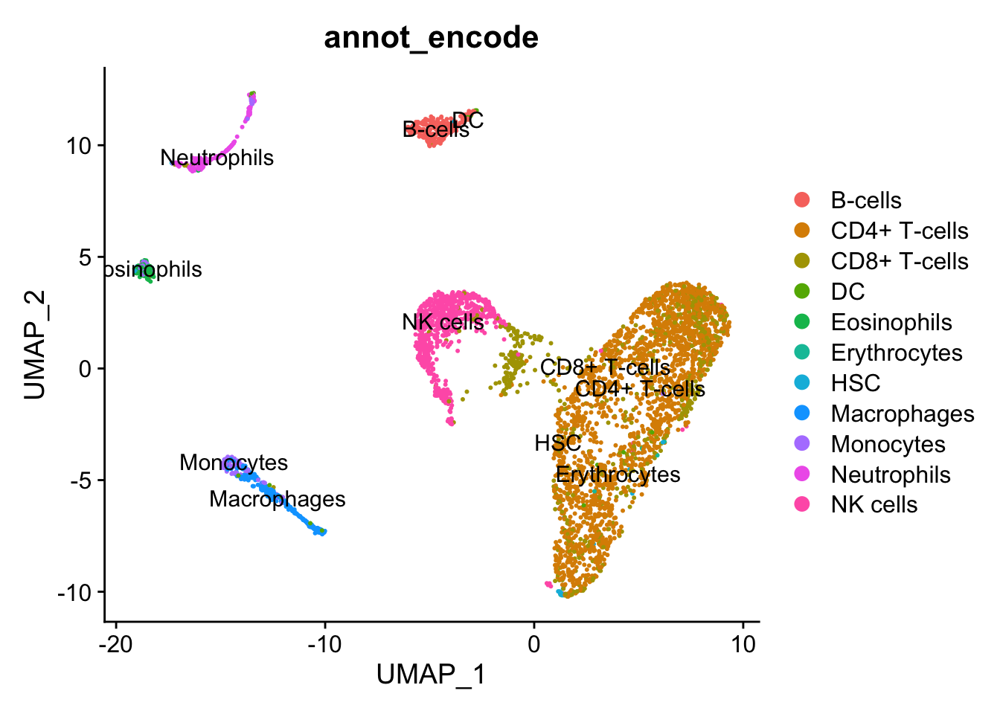

Chapter 6 Marker Identification
Load RData
Load the RData which contain all files from previous chapter.
load("data/intermediate_data/chapter5.RData")1. Find marker genes
1.1 FindAllMarkers
This type of analysis is typically for evaluating a single sample group/condition. With the FindAllMarkers function we are comparing each cluster against all other clusters to identify potential marker genes. The cells in each cluster are treated as replicates, and essentially a differential expression analysis is performed with some statistical test. By default, the test is Wilcoxon Rank Sum test.
The FindAllMarkers function has three arguments to determine if a gene is a marker gene.
logfc.threshold Limit testing to genes that show, on average, at least an X-fold difference (log-scale) between the two groups of cells. The default is 0.25. Increasing logfc.threshold speeds up the function but can miss weaker signals.
min.pct Only test genes that are detected in a minimum fraction of min.pct cells in either of the two populations. It is meant to speed up the function by not testing infrequently expressed genes. The default is 0.1.
only.pos Only return positive markers (FALSE by default)
We can combine these arguments. We can change the arguments depending on how stringent we want to be. Here we will use the default settings.
We look at the marker genes in the clusters in sample “activated”.
treated.markers <- FindAllMarkers(subset(integrate.filtered.rna, subset = Sample_Name == "treated"),
assay = "RNA",
only.pos = TRUE,
min.pct = 0.25,
logfc.threshold = 0.25)Let’s look at the top 2 significant marker genes in each cluster.
# A tibble: 26 × 7
# Groups: cluster [13]
p_val avg_log2FC pct.1 pct.2 p_val_adj cluster gene
<dbl> <dbl> <dbl> <dbl> <dbl> <fct> <chr>
1 9.89e-158 2.63 0.744 0.212 1.91e-153 0 MAL
2 3.62e-104 2.10 0.734 0.379 7.01e-100 0 PCED1B-AS1
3 0 5.06 0.961 0.055 0 1 GNLY
4 3.65e-259 4.13 0.892 0.108 7.07e-255 1 CCL5
5 5.52e- 12 1.07 0.75 0.515 1.07e- 7 2 HSPD1
6 6.86e- 17 1.00 0.957 0.787 1.33e- 12 2 NPM1
7 5.53e- 82 2.41 0.594 0.119 1.07e- 77 3 RGS1
8 5.81e- 25 1.82 0.304 0.09 1.12e- 20 3 FOXP3
9 1.24e-122 2.25 0.916 0.276 2.39e-118 4 LTA
10 1.65e-159 1.97 0.941 0.225 3.20e-155 4 MIR155HG
# ℹ 16 more rowsWe get a table with the information on marker genes.
p_val p-value before multiple testing.
avg_log2FC log2 fold change on the average of gene expression between one cluster and the rest of cluster combined.
pct.1 Percentage of cells express the gene in one group. Here is one cluster.
pct.2 Percentage of cells express the gene in another group. Here is the rest of cluster combined.
p_val_adj p-value with multiple testing correction.
1.2 FindConservedMarkers
We have two samples, naïve and treated. We can find conserved markers between the conditions with the function, FindConservedMarkers.
This function internally separates out cells by sample group/condition, then performs differential gene expression testing for a single specified cluster against all other clusters (or a second cluster, if specified).
Gene-level p-values are computed for each condition and then combined across groups using meta-analysis methods from the MetaDE R package.
Many of the arguments in FindConservedMarkers are shared with FindAllMarkers. Here, we list some additional arguments when using FindConservedMarkers:
ident.1 This function only evaluates one cluster at a time; here, you would specify the cluster of interest. grouping.var The variable (column header) in your metadata specifies the separation of cells into groups.
fcm <- FindConservedMarkers(integrate.filtered.rna,
assay = "RNA",
ident.1 = "1",
grouping.var = "Sample_Name",
only.pos = TRUE,
min.diff.pct = 0.25,
min.pct = 0.25,
logfc.threshold = 0.25)
head(fcm) naive_p_val naive_avg_log2FC naive_pct.1 naive_pct.2 naive_p_val_adj
GNLY 0.000000e+00 4.823298 0.947 0.024 0.000000e+00
GZMA 8.973490e-245 3.778985 0.835 0.041 1.736101e-240
PRF1 1.103550e-125 2.671046 0.453 0.021 2.135038e-121
NKG7 1.504853e-212 3.572770 0.823 0.060 2.911439e-208
CCL5 9.363098e-161 3.319940 0.852 0.120 1.811479e-156
CST7 5.390018e-149 3.014122 0.634 0.053 1.042807e-144
treated_p_val treated_avg_log2FC treated_pct.1 treated_pct.2
GNLY 0.000000e+00 5.060457 0.961 0.055
GZMA 0.000000e+00 3.813904 0.976 0.082
PRF1 0.000000e+00 3.855625 0.907 0.068
NKG7 8.396253e-261 3.398566 0.982 0.150
CCL5 3.653151e-259 4.133251 0.892 0.108
CST7 6.882951e-236 3.135928 0.759 0.068
treated_p_val_adj max_pval minimump_p_val
GNLY 0.000000e+00 0.000000e+00 0.000000e+00
GZMA 0.000000e+00 8.973490e-245 0.000000e+00
PRF1 0.000000e+00 1.103550e-125 0.000000e+00
NKG7 1.624423e-256 1.504853e-212 1.679251e-260
CCL5 7.067750e-255 9.363098e-161 7.306301e-259
CST7 1.331645e-231 5.390018e-149 1.376590e-235We also get a table with information on marker genes. The statistics are computed for each group (naïve vs. treated), and the last two columns are the combined p-value across the two groups.
condition_p_val p-value before multiple testing.
condition_avg_log2FC log2 fold change on the average of gene expression between one cluster and the rest of the clusters combined.
condition_pct.1 Percentage of cells expressing the gene in one group.
condition_pct.2 Percentage of cells expressing the gene in another group.
condition_p_val_adj p-value with multiple testing correction.
The more significant the difference between pct.1 and pct.2, the higher the confidence for the marker gene. If pct.1 is 0.9 and pct.2 is 0.8, it is not as interesting as if pct.2 is 0.1.
Marker genes express in a specific cell type. If pct.1 is low, such as 0.3, it is not as interesting as if it is 0.9.
We can visualize the marker gene expression by FeaturePlot and VlnPlot.
FeaturePlot(object = integrate.filtered.rna,
features = c("GNLY", "GZMA"),
order = TRUE,
min.cutoff = 'q10',
label = TRUE,
repel = TRUE)

1.3 FindMarkers
We can use the FindMarkers to determine the differentially expressed genes between two clusters.
example_findmarkers <- FindMarkers(integrate.filtered.rna,
assay = "RNA",
ident.1 = 1,
ident.2 = 2) %>%
rownames_to_column("gene")2. Automatic annotation
So far, we already look at the marker genes based on knowledge (last chapter) and between clusters. The manual annotation usually takes time, and we might need to go back and forth to annotate the clusters. Another way to annotate the clusters is through the automatic annotation.
2.1 Reference-based
We look at the publicly available dataset with annotation and build a reference set based on its information. Then we can “transfer” the annotation from the reference to the query. Seurat provides the interface to connect with Azimuth.
Because the annotation information is based on the reference set, the reference ideally are similar to the query. They may come from the same tissue, same organism, similar experimental procedure, etc.
integrate.filtered.rna <- Azimuth::RunAzimuth(integrate.filtered.rna, reference = "pbmcref", verbose = F)An AzimuthData object - reference version: 1.0.0
Contains 3 meta.data field(s) to transfer.We can look at the prediction on UMAP.
p1 <- DimPlot(integrate.filtered.rna, reduction = "umap", group.by = "predicted.celltype.l1", label = TRUE, label.size = 3 ,repel = TRUE) + NoLegend()
p2 <- DimPlot(integrate.filtered.rna, reduction = "umap", group.by = "integrated_snn_res.0.6", label = TRUE, label.size = 3 ,repel = TRUE) + NoLegend()
p1|p2
2.1 Marker-based
The celldex contains several curated reference datasets, mostly assembled from bulk RNA-seq or microarray data of sorted cell types. Here, we will use a reference constructed from Blueprint and ENCODE data (Martens and Stunnenberg 2013; The ENCODE Project Consortium 2012).
# get reference
# ref_encode <- BlueprintEncodeData()
ref_encode <- readRDS("data/blueprint_encode_ref.rds")
# perform annotation
annot_encode <- SingleR(test = as.SingleCellExperiment(integrate.filtered.rna), ref = ref_encode, labels = ref_encode$label.main)
# get labels into Seurat object
integrate.filtered.rna$annot_encode <- annot_encode$labels
# Visualizae
DimPlot(integrate.filtered.rna, group.by = "annot_encode", label = T, reduction = "umap")
3. Save
Save the files into RData for documentation.
# save(integrate.filtered.rna, expMat, file = "data/intermediate_data/chapter6.RData")